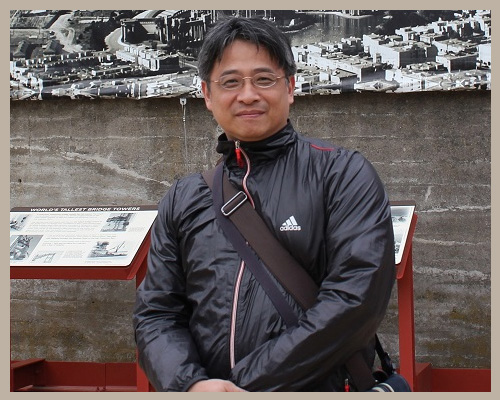

首頁
學/經歷
著作發表
學位論文
期刊論文
會議論文
審校書籍
其他
論文指導
得獎紀錄
專案計畫
專業服務
藝術展演
演講
相關連結
校內連結
天主教輔仁大學
教育學院
圖書資訊學系
圖書資訊學系進修學士班
校外連結
教育部
國家圖書館
台北市立圖書館總館
新北市立圖書館總館
國立公共資訊圖書館(台中)

Shun-DerRyan Chen
天主教輔仁大學
圖書資訊學系
陳舜德副教授
藝術展演
陳舜德，「中文離線手寫光學文字辨識後處理系統」，國科會成果展，資策會科技大樓，1996-04-26~1996-04-28
陳舜德，「中文離線印刷體光學文字辨識後處理系統」，第一屆即時與多媒體系統研討會，中研院，1995-07-30~1995-07-31